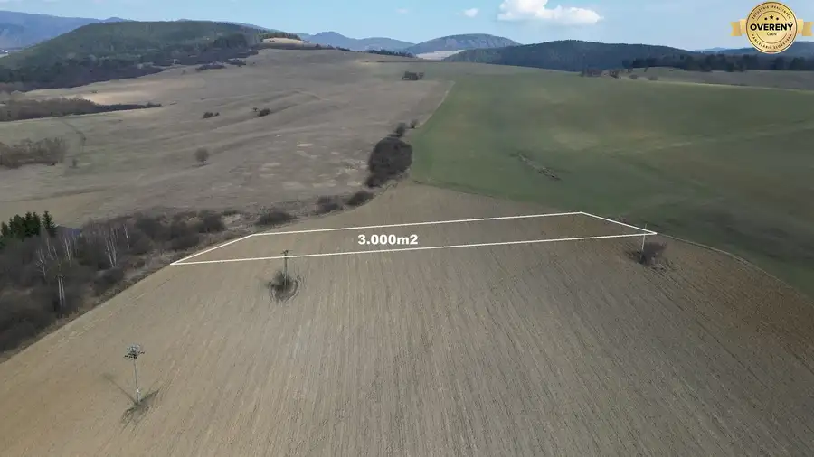
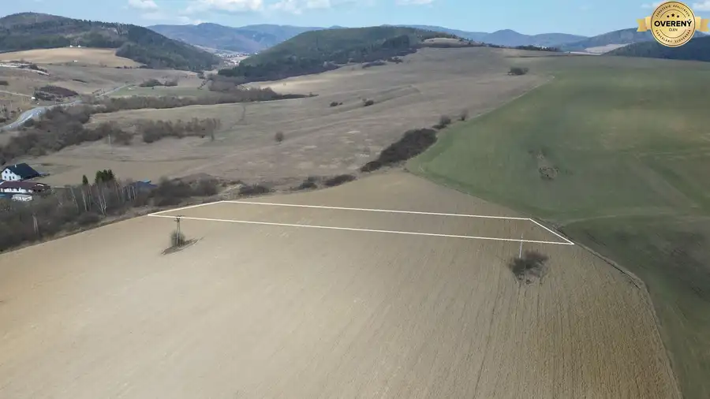
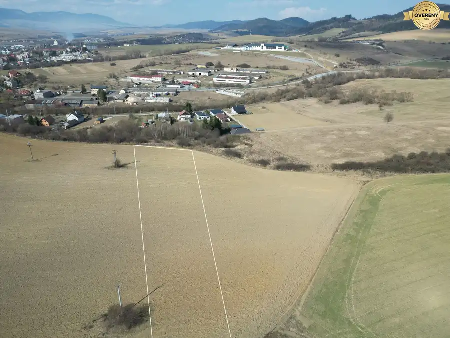
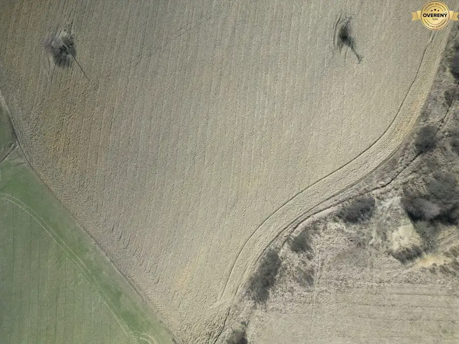
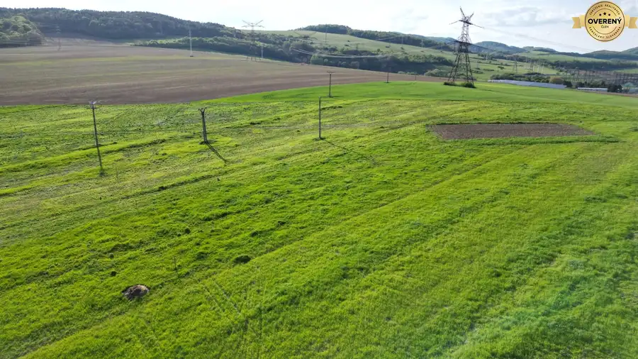
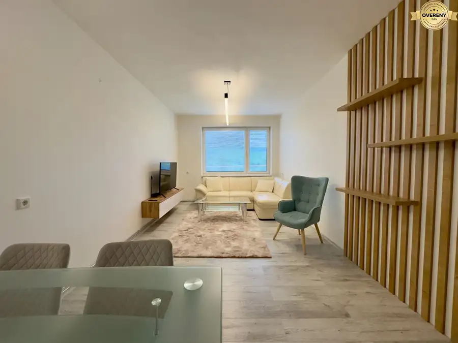
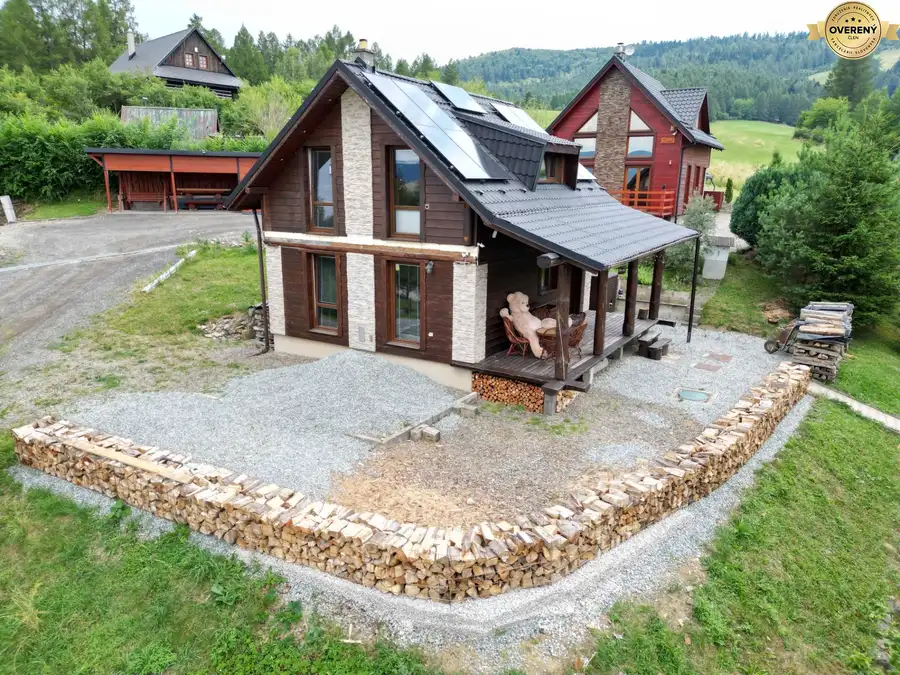

Investičný pozemok 3.000m2 Lipany, okres Sabinov
Lipany




- Plocha3000 m²
- Poschodie0.
- Vlastníctvoosobné
O nehnuteľnosti
Technické informácie a špecifikácia:
Pozemok:
– výmera min. 3000m2 + možná dohoda na výmere pozemku, min. však 3000m2,
– šírka pozemku cca 21m, dlzka cca 150m2,
– rovina,
- v blízkosti 100m vzdušná vzdialenoť stoja nové rodinné domy,
- oproti pozemku 700m vzdušná vzdialenoť sa nachádza Thermalpark Lipany,
– aktuálne ešte extravilán,
– slnečný pozemok,
– tichá lokalita,
– hranice terénu sú na fotkách zobrazené orientačne,
- výhradný vlastník, podiel 1/1, nie spoluvlastnícky podiel, parcela KN-C,
- v cene je vyhotovenie geometrického plánu na novovznikutý pozemok a vytýčenie hraníc pozemku v teréne.
.:CENA za pozemok 3.000m2 je 40.000,-Eur + možná DOHODA na výmere a cene pozemku:.
Výhody:
Vhodná a zaujímavá investícia do perspektívneho pozemku na rovine s výhľadom na ThermalPark Lipany a celú hornú Torysu za rozumnú cenu 13,33-Eur/m2.
.:V cene je samozrejme kompletný právny a realitný servis:.
.:Spravujeme citlivé údaje klientov, neodpovedáme na anonymné emaily a sms:.
.:Martin Vaľko RSc. – v realitách od roku 2009:.
.:Aj Vašu nehnuteľnosť môžem bezpečne a diskrétne predať alebo prenajať:.
– certifikovaný Realitný poradca od roku 2011
– akreditovaný Manažér správy budov od roku 2017
– člen Združenia realitných kancelárií Slovenska /ZRKS/
– konateľ VAĽKO REALITY, spol. s r. o.
Martin Vaľko RSc., konateľ VAĽKO REALITY, spol. s r.o. email:
Asistentka,
Parametre
- Rozloha pozemku
- 3000 m²
- Poschodie
- prízemie
- Vlastníctvo
- osobné
- Status
- aktívne
- Terén
- rovina
- Dátum zverejnenia
- 2026-03-18
Kde to je
Mohlo by Vás zaujímať

PozemokNové 40 158 €Na predaj investičný pozemok 582m2, obec Lemešany, okres Prešov Lemešany 582 m²
BytNové 155 000 €NA PREDAJ 2-izbový tehlový byt Lipany, okres Sabinov Lipany 2-izbový50 m²
Chaty a chalupyNové 159 000 €Rekreačná chata Dubovica-Žliabky, okres Sabinov Dubovica 3-izbový51 m²